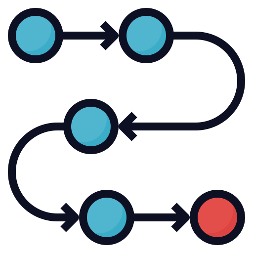

Contrast:
%
Difference in luminance or colour that makes an object (or its representation in an image or display) distinguishable.
Brightness:
%
An attribute of visual perception in which a source appears to be radiating or reflecting light.
Opacity:
%
Describes the transparency level, it ranges from 0 to 1.
Saturate:
%
Describes the depth or intensity of color present within an image.
Grayscale:
%
The value of each pixel is a single sample representing only an amount of light.
Invert:
%
Change all pixel color to the opposite.
Sepia:
%
A form of photographic print toning – a tone added to a black and white photograph in the darkroom to “warm” up the tones.
Blur:
px
Blur image.